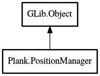

PositionManager
Object Hierarchy:

Description:
public class PositionManager : Object
Handles computing any size/position information for the dock.
Content:
Structs:
Properties:
- public DockController controller { construct; }
- public
int win_x { protected set; get; }
Cached x position of the dock window.
- public
int win_y { protected set; get; }
Cached y position of the dock window.
- public
int LineWidth { get; }
Theme-based line-width.
- public
int IconSize { get; }
Cached current icon size for the dock.
- public
int IndicatorSize { get; }
Theme-based indicator size, scaled by icon size.
- public
int IconShadowSize { get; }
Theme-based icon-shadow size, scaled by icon size.
- public
int GlowSize { get; }
Theme-based urgent glow size, scaled by icon size.
- public
int HorizPadding { get; }
Theme-based horizontal padding, scaled by icon size.
- public
int TopPadding { get; }
Theme-based top padding, scaled by icon size.
- public
int BottomPadding { get; }
Theme-based bottom padding, scaled by icon size.
- public
int ItemPadding { get; }
Theme-based item padding, scaled by icon size.
- public
int UrgentBounceHeight { get; }
Theme-based urgent-bounce height, scaled by icon size.
- public
int VisibleDockHeight { get; }
The currently visible height of the dock.
- public
int DockHeight { get; }
The static height of the dock.
- public
int DockBackgroundHeight { get; }
The height of the dock's background image.
- public
int VisibleDockWidth { get; }
The currently visible width of the dock.
- public
int DockWidth { get; }
The static width of the dock.
- public
int DockBackgroundWidth { get; }
The width of the dock's background image.
- public
int MaxItemCount { get; }
The maximum item count which fit the dock in its maximum size with the
current theme and icon-size.
Creation methods:
Methods:
Inherited Members:
All known members inherited from class GLib.Object
- @new
- newv
- new_valist
- get_type
- get_class
- @ref
- unref
- ref_sink
- weak_ref
- weak_unref
- add_weak_pointer
- remove_weak_pointer
- @get
- @set
- get_property
- set_property
- get_data
- set_data
- set_data_full
- steal_data
- get_qdata
- set_qdata
- set_qdata_full
- steal_qdata
- freeze_notify
- thaw_notify
- dispose
- constructed
- notify_property
- connect
- disconnect
- add_toggle_ref
- remove_toggle_ref
- bind_property
- notify
- ref_count